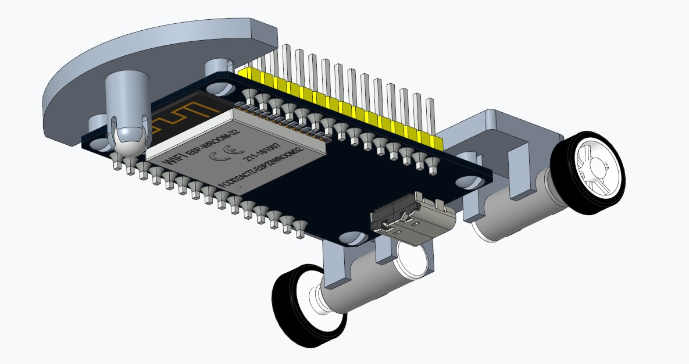
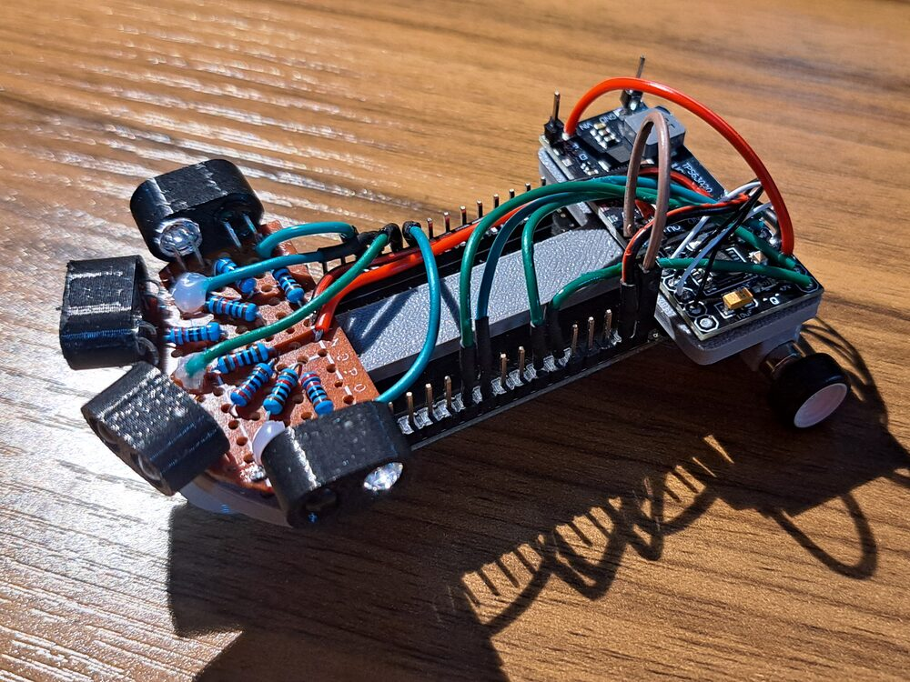
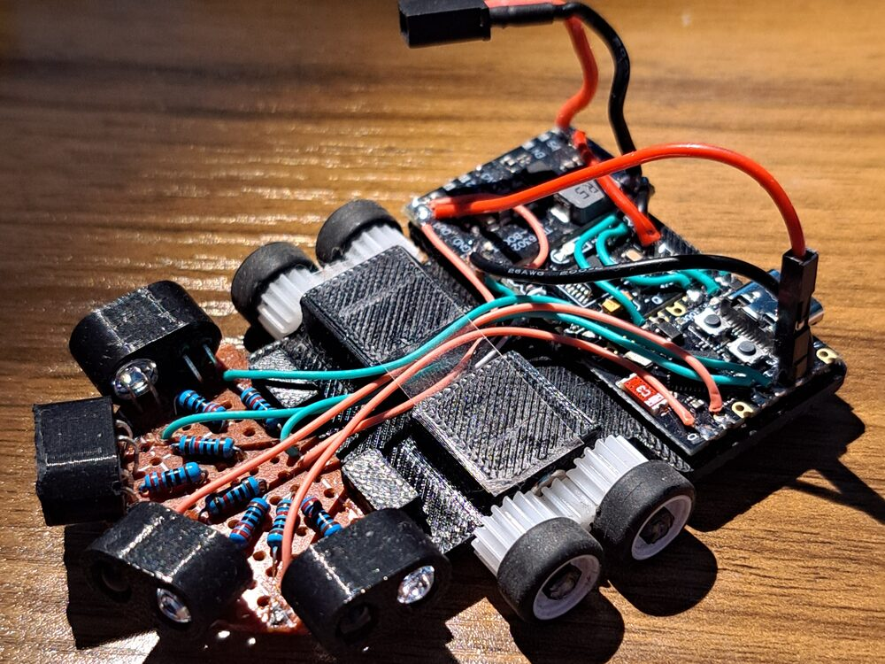

This is where I keep my own projects: what I built, what failed, and what I changed.
Compressed air, an asymmetric geometry and a bending motion. A PneuNet gripper that closes from a hand-pushed syringe, holds pressure, and lifts a real object.
Air leaked between layers. Printing at 45° solved the bridging but risked bending-torsion coupling from the print-line anisotropy.
A PETG mold with an inner core, and cast silicone. The same porosity showed up in the PETG parts and was sealed with a thin silicone coat.
Fewer slots, then a thicker wall. Peeling off like a glove worked in iteration 2 and tore the silicone in iteration 3.
Manual actuation with a syringe.
The gripper lifting a real object.
The silicone is a cheap craft kit with no material data, so results are qualitative only. The thin wall was fixed by calibrating the inner holder and adding silicone by hand where needed.
Automation: an Arduino, a DC motor and a rack and pinion pushing the syringe plunger. For the next mold: a segmented core, or a core printed in PVA that dissolves in water.
A small differential-drive robot that started with hard-coded reflexes. The goal now is a controller learned from my own driving, and a fair test of whether it beats the reflex version.
A Braitenberg-style avoidance controller on four IR sensors. It proved the wiring and the mechanics, and it is the baseline the learned controller has to beat.
Version 1 had its heavy parts at the front and its drive wheels at the rear, so the wheels slipped in turns and the motors ran hot. Version 2 moved to an ESP32-C3, two 615 motors near the center and four wheels.
Sensor noise is about 6 counts, but the gain differs between sensors and shifts 5–35% between sessions. Running the motors raises the jitter 10–40 times, so I added filter capacitors and still have to repeat the test.

Version 1 in CAD.

Version 1, built: IR sensors on a perfboard fan, drive wheels at the rear, a caster at the front.

Version 2: ESP32-C3, motors near the center, two wheels per side.
A test run in a hand-made maze.
Whether the learned controller beats the reflex baseline hasn’t been tested, because I haven’t recorded the first dataset yet. Part of the motor noise may be vibration and not electrical, and that is still not separated.
A short pilot recording, then a decision tree or random forest and a small neural network trained on my driving, compared with the reflex controller in closed-loop runs. If the learned one doesn’t win, that is still a result.
Structural redesign of a carbon-fibre monocoque concept: looking at failure points under bending and torsion, and adapting the design to carbon-fibre manufacturing.
3D-printable models I designed. The standout models will appear here, with real download and print counts.
Mechanical engineering student at the Technion (since 2023, expected graduation 2028). Before engineering I spent about seven years making video and music independently.
Tools: PTC Creo (advanced), SolidWorks (intermediate), FDM 3D printing, microcontrollers (ESP32, Arduino), Python (basic).